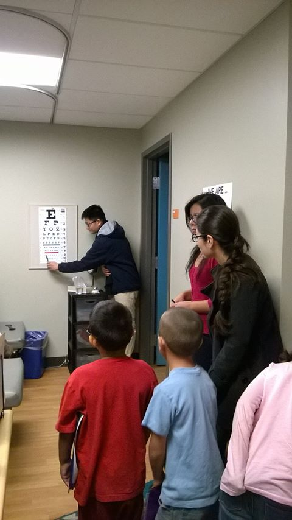
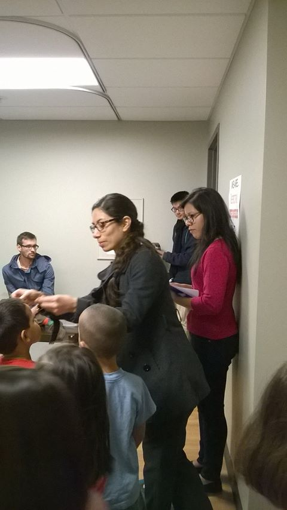

Who We Are
|

|
Insight is the only pre-optometry club at UCSD. We are a great resource for all those who are interested in applying for optometry schools. We have quarterly general body meetings to inform members of upcoming events. We host socials for officers and members to get develop closer relationships between members. We also hold trips throughout the year to visit optometry schools as well as volunteer events. Insight hosts different optometry school representatives and well as optometrists so that members can gain insight on their future optometry goals. As a member, you will be able to attend all the meetings, have priority to attend trips, have access to our internship list, and sign up for our mentor-mentee program. We always welcome new members. Join us and meet other pre-optometry students to embark on our journeys together. Get to know our officers →Sign up for our mailing list → |

|